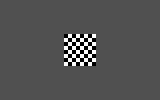
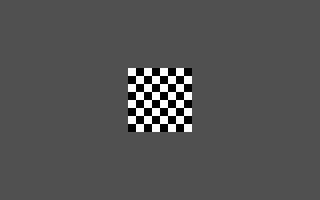

| [ < ] | [ > ] | [ << ] | [ Up ] | [ >> ] | [Top] | [Contents] | [Index] | [ ? ] |
RANDEXT Subfunction 4: alternating checkerboard
Syntax:
RANDEXT 4, checksize
Draws a 64x64 black and white square centered on a light gray full picture (320x200) background. The square drawn will have a checkerboard pattern, with each "check" having a side length of the specified checksize.
Subsequent calls to this subfunction by the same %I (see section Create Pictures from CXR) call will draw
an identical square with the black and white pixels reversed; that is,
the top left checker will start with the alternate color.
The following testlist draws 5 pictures with checkerboard squares, each "subsquare" having a size of 8 pixels. The 5 pictures alternate, so picture 3 and 5 are the same as picture 1, and picture 4 is the same as picture 2.
%X[randext.cxr] %M2%C2 %I[5,4,8] %J[1,5,10] |
Here are the two types of pictures created:
 |
 |